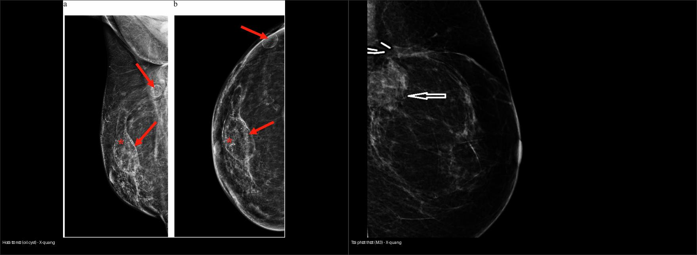
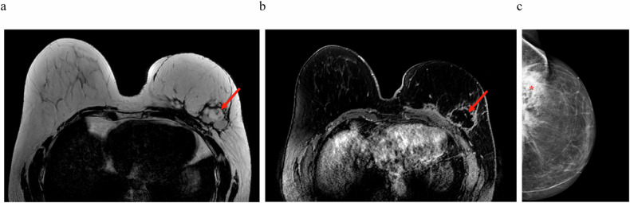
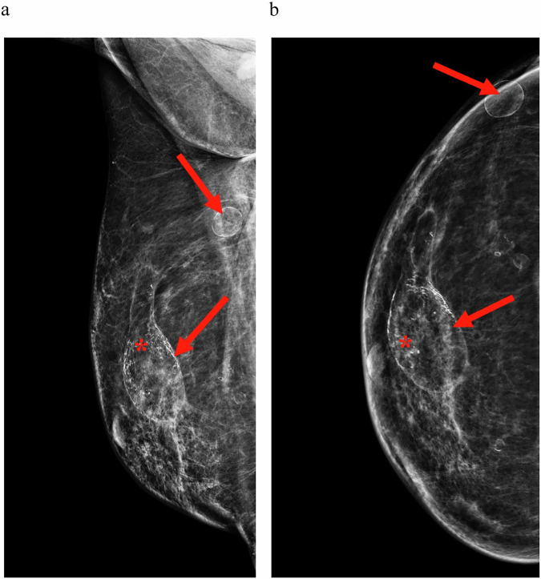
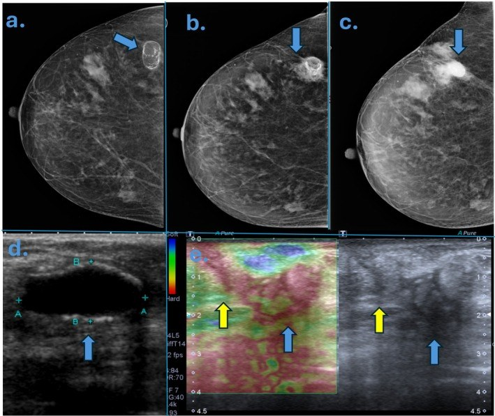
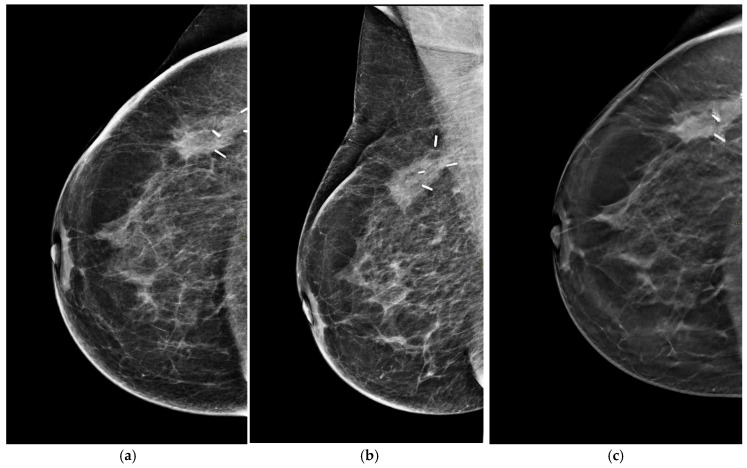
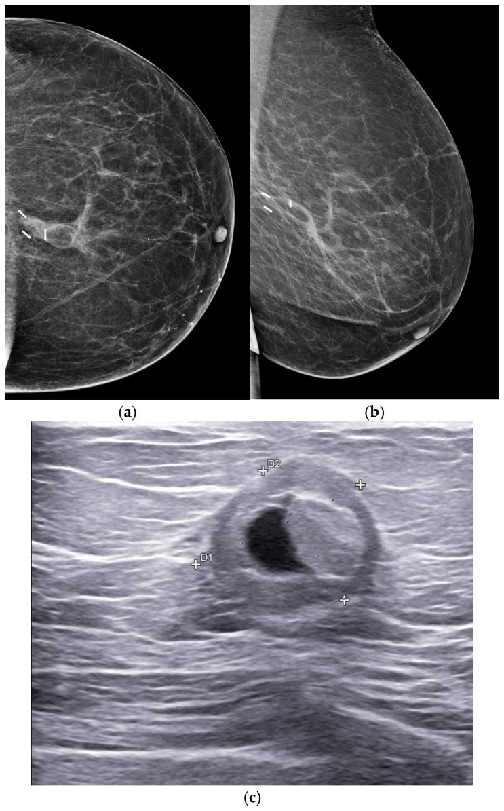
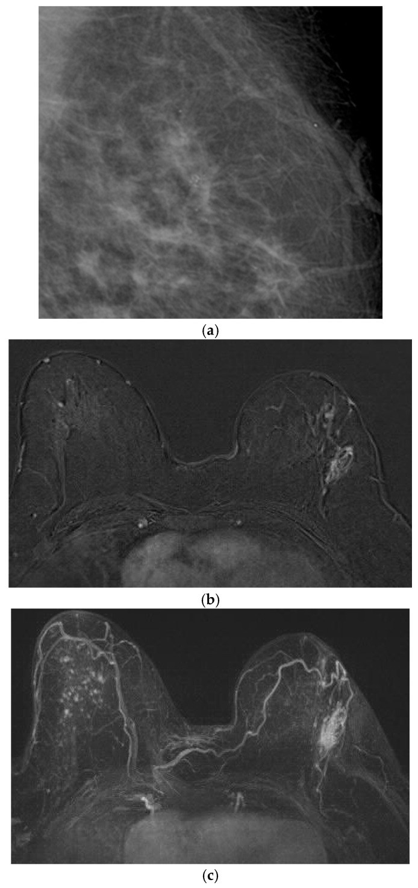
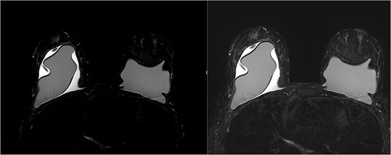
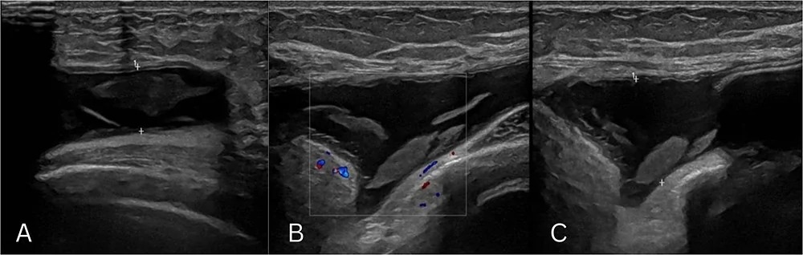
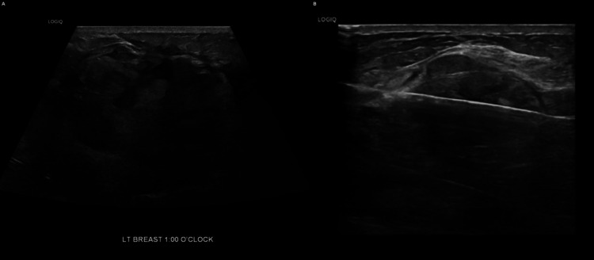

516 — Hình ảnh vú sau điều trị: tái tạo, hoại tử mỡ, sẹo vs tái phát & BIA-ALCL / The treated breast
Tags: pattern:vu-sau-dieu-tri pattern:hoai-tu-mo pattern:u-tai-phat vung:vu score:BI-RADS protocol:sieu-am-vu protocol:MRI-vu incidentaloma:BIA-ALCL
Mức chắc chắn (certainty): tổng hợp y văn (literature synthesis) — nhóm tự biên từ y văn mở (Europe PMC/PMC: Insights Imaging 2026, Life 2026, J Surg Case Rep 2026, ANZ J Surg 2026, Cureus 2026) + các ca minh họa có giấy phép CC BY; có 1 ca nguyên văn (BIA-ALCL) đọc trực tiếp từ bài gốc.
1. Tổng quan — vì sao "đọc vú đã can thiệp" khó + cơ chế hình ảnh
- Bối cảnh: sau phẫu thuật bảo tồn (breast-conserving therapy — BCT: cắt khối u + xạ trị), cắt toàn bộ tuyến (mastectomy) có/không tái tạo, ghép mỡ tự thân (autologous fat transfer — AFT) và đặt túi ngực (implant), mô vú bị thay đổi giải phẫu + xơ hóa + mất dấu mốc → cùng một khối có thể là sẹo lành, hoại tử mỡ, huyết thanh tụ hay tái phát trên cùng một phim. Câu hỏi trung tâm của mọi lần đọc: tổn thương này ỔN ĐỊNH theo thời gian hay đang TIẾN TRIỂN?
- Cơ chế hoại tử mỡ (fat necrosis — phản ứng vô khuẩn, "xà phòng hóa"): chấn thương/phẫu thuật/xạ làm chết tế bào mỡ → giải phóng acid béo tự do → gắn calci tạo xà phòng hóa (saponification) + viêm mạn với đại thực bào (histiocyte) → 3 giai đoạn tiến triển: cấp (viêm) → trung gian → mạn (xơ + vôi hóa + nang dầu). Chính chuỗi này sinh ra nang dầu (oil cyst) và vôi hóa vỏ mỏng "vỏ trứng" (eggshell).
- TẠI SAO trên X-quang: mỡ giảm đậm độ tia X → nang dầu trong sáng (radiolucent); acid béo xà phòng hóa lắng calci → vôi hóa thô/vỏ nằm trong vùng sáng mỡ.
- TẠI SAO trên MRI: nang dầu là lipid → T1W rất sáng, T2W sáng, và tối đi khi fat-sat (T1FS/T2FS) vì mỡ bị ức chế; lõi hoại tử mỡ KHÔNG ngấm thuốc (không còn mạch), chỉ ngấm viền không đều ở giai đoạn viêm (mô hạt). Đây là chốt vật lý phân biệt với tái phát (mô u sống → ngấm, thường ngấm nhanh–thoát sớm Type III washout).
- TẠI SAO trên siêu âm: nang dầu trong âm (anechoic), bờ đều, không mạch; mô hoại tử viêm tăng/hỗn hợp hồi âm (heterogeneous), bờ có thể không đều → dễ nhầm khối đặc — đây là cạm bẫy số 1.
- Ngưỡng định lượng (bắt buộc): tổng quan 17 nghiên cứu (Smeins 2026): hoại tử mỡ gặp 12,5–23,6% sau tái tạo vạt (flap) so với 7,3–82,9% sau AFT (n = 5); thời điểm chụp 1–240 tháng sau mổ. Vôi hóa có thể xuất hiện sớm ~11 tháng sau AFT, nang dầu rõ từ năm thứ 2, vôi hóa lan tỏa sau 2 năm. MRI vạt TRAM: tổn thương không ngấm lõi + ngấm viền không đều, trung bình 153 ngày (32–510 ngày) sau mổ.
- Vị trí là đầu mối: sau vạt hoại tử mỡ hay ở rìa ngoại vi vạt; sau AFT phân bố lan tỏa. Vạt nào còn tín hiệu mỡ (T1 sáng) là vạt sống.
- Xạ trị (post-radiotherapy): tiến triển theo thời gian — cấp (≤ vài tháng): phù nề, dày da, tăng đậm độ, dày vách (thành phần viêm/mạch máu, KHÔNG phải u); mạn (sau 6–12 tháng): xơ hóa, hoại tử mỡ, biến dạng cấu trúc (architectural distortion), co kéo da. Độ đặc hiệu của MRI GIẢM trong 6–12 tháng đầu sau xạ vì ngấm thuốc do viêm/xạ → phải so chuỗi thời gian.
- Túi ngực & BIA-ALCL: BIA-ALCL (breast implant-associated anaplastic large cell lymphoma) là u lympho T CD30+, ALK âm, gắn chặt túi bề mặt nhám (textured); thể điển hình = huyết thanh tụ MUỘN (late seroma, > 1 năm sau đặt túi). Đây là ung thư nhưng TIÊN LƯỢNG RẤT TỐT nếu khu trú và cắt bỏ toàn bộ bao + túi (en-bloc capsulectomy) → tránh gọi nhầm "huyết thanh tụ lành", nhưng cũng tránh hóa trị oan khi đã cắt hết.
2. Mẫu hình + chẩn đoán phân biệt theo bối cảnh can thiệp (Gamut)
- Khuôn 1 — Nốt/khối trong vú ĐÃ MỔ cũ. "Bộ ba giả u" hay gặp: hoại tử mỡ (nang dầu/vôi hóa vỏ), sẹo xơ co kéo (surgical scar), huyết thanh tụ tồn dư (seroma). Tất cả phải so phim cũ: sẹo lành ổn định nhiều năm; tái phát mọc lên.
- Khuôn 2 — Vôi hóa trong vú đã mổ/xạ. Vôi hóa hoại tử mỡ thô, vỏ mỏng ("vỏ trứng"), quanh vùng sáng mỡ = lành (BI-RADS 2). Vôi hóa đa hình/phân nhánh (pleomorphic, branching) + dày lên = nghi tái phát/DCIS (BI-RADS 4–5), không kể tiền sử.
- Khuôn 3 — Vú tái tạo tự thân (vạt TRAM/DIEP, AFT). Hoại tử mỡ (không ngấm lõi, ngấm viền; rìa vạt sau vạt, lan tỏa sau AFT) vs tái phát tại vạt (mô đặc ngấm, DWI sáng, ADC thấp). AFT còn có nang dầu nhiều ổ lan tỏa đặc trưng.
- Khuôn 4 — Vú có túi ngực. Dịch quanh túi (peri-implant fluid): huyết thanh tụ lành (sớm nhất thời gian đầu, mỏng) vs huyết thanh tụ MUỘN > 1 năm (đỏ cờ → BIA-ALCL, lấy dịch tế bào học) vs tụ máu muộn vs nhiễm trùng. Kèm dày bao không đều/khối trong bao.
- Khuôn 5 — Vú đã xạ trị, có khối trong "biến dạng cấu trúc". Xơ/xạ tạo biến dạng cấu trúc dày đặc; tìm tăng kích thước theo thời gian, ngấm thuốc mới, vôi hóa đa hình mới = tái phát. Biến dạng cấu trúc đơn thuần, ổn định, không ngấm mới = lành.
- Gợi nhớ "SURGERY": Seroma, Unhealed scar/xơ co kéo, Recurrence (tái phát), Graft fat necrosis (hoại tử mỡ ghép/vạt), Edema–Erythema (phù da do xạ), Rupture/implant complication (vỡ/bao/túi), Yield to old films (luôn so phim cũ).
3. Bảng so sánh phân biệt (ma trận đối chiếu)
| Thực thể (entity) | Hình ảnh điển hình (MG/US/MRI) | Chốt vào (rule-in) | Chốt loại (rule-out) | Gợi ý xác nhận |
|---|---|---|---|---|
| Hoại tử mỡ (fat necrosis) | MG: nang dầu trong sáng + vôi hóa vỏ "vỏ trứng"; US: hỗn hợp hồi âm/nang, không mạch; MRI: lõi không ngấm + ngấm viền không đều, T1FS tối | Nang dầu trong sáng + vôi hóa vỏ mỏng + lõi không ngấm thuốc | Ngấm thuốc lõi nhanh–thoát + DWI sáng → loại hoại tử mỡ | So phim cũ; nếu đủ tiêu chuẩn điển hình → chỉ theo dõi |
| Sẹo xơ co kéo (surgical scar) | Biến dạng cấu trúc gai nhọn tại vết mổ, vôi hóa thô, có kẹp phẫu thuật | ỔN ĐỊNH trên ≥ 2 lần chụp ở các hướng giống nhau | Mọc lên/thay đổi → nghi tái phát | Đối chiếu phim cũ (chìa khóa) |
| Huyết thanh tụ (seroma) | US: dịch trong, bờ đều, dưới da/buồng mổ; MRI: T2 sáng, không ngấm (trừ vỏ mỏng) | Không ngấm + co nhỏ dần theo thời gian | Thành dày/ngấm + nội dung lơ lửng tăng → thay đổi khác | Theo dõi; chọc nếu nghi |
| Tái phát tại vú đã mổ/xạ (local recurrence) | Khối/mô đặc mới, tăng kích thước, vôi hóa đa hình/phân nhánh mới, NME tại sẹo, DWI sáng/ADC thấp | TIẾN TRIỂN sau giai đoạn ổn định + ngấm thuốc mới | Ổn định nhiều năm + không ngấm mới → không phải tái phát | Sinh thiết có định hướng (US/MRI/stereotactic) |
| Tái phát ngụy trang hoại tử mỡ (ca Cureus) | Khối tại sẹo, sinh thiết lần 1 ra hoại tử mỡ/xơ; sau TO LÊN | Sinh thiết lành rồi vẫn TO LÊN → phải sinh thiết LẠI | Không dùng 1 kết quả lành để dừng khi khối tiến triển | Sinh thiết lại + PET-CT khi có gợi ý |
| Biến đổi sau xạ (post-RT change) | Dày da, phù, tăng đậm độ; mạn: xơ + biến dạng cấu trúc + co kéo | Tiến triển cấp → thoái triển dần; đối xứng theo vùng chiếu xạ | Ổn định KHÔNG loại xạ; nhưng mới/tiến triển = nghi | So phim + tính bối cảnh xạ (thời điểm) |
| BIA-ALCL (late peri-implant effusion) | MRI: dịch quanh túi + dày bao không đều hai bên; US: dịch hỗn hợp có cặn, không mạch | Dịch quanh túi MUỘN (> 1 năm) + dày bao không đều; tế bào học dịch dương | Dịch trong, mỏng, sớm sau mổ + tự thoái triển → lành | Chọc dịch tế bào học (CD30+/ALK−); PET-CT phân giai đoạn; en-bloc capsulectomy |
| Huyết thanh tụ lành quanh túi (benign seroma) | Dịch quanh túi mỏng, sớm, bờ đều, không dày bao | Sớm sau mổ + giảm dần + dịch trong | Thành bao không đều/dày lên muộn → nghi BIA-ALCL | Theo dõi; chọc nếu muộn |

Trái: hoại tử mỡ — nang dầu trong sáng + vôi hóa vỏ mỏng tại vị trí phẫu thuật (Smeins 2026, Fig. 6). Phải: tái phát thật — đám đậm độ tại sẹo được xếp M3, về sau sinh thiết xác nhận ung thư tái phát (Srivastava 2026, Fig. 2). Cả hai cùng nhìn "ở vị trí sẹo" — chỉ tiến triển theo thời gian mới tách được. Ảnh ghép letterbox, CC BY 4.0.Dấu hiệu "chốt" phân biệt hoại tử mỡ vs tái phát
- Hoại tử mỡ luôn có thành phần mỡ: trên MRI xuất hiện một phần tín hiệu mỡ (T1 sáng, tối khi fat-sat) và lõi không ngấm; thường ổn định/giảm dần.
- Tái phát là mô sống: MRI ngấm nhanh–thoát (Type III), DWI sáng/ADC thấp, và mọc lên theo thời gian; vôi hóa đa hình/phân nhánh mới.
- Khi hoại tử mỡ bị xếp BI-RADS 4 (bờ không đều, ngấm viền), vị trí + kiểu ngấm trên MRI giúp tách khỏi tái phát (Smeins 2026, tổng quan từ Kang 2016).
4. Protocol chụp + BI-RADS + theo dõi + lưu đồ
- Nhũ ảnh (mammography) là chuẩn nền theo dõi sau BCT: đánh giá lặp lại được biến dạng cấu trúc + vôi hóa; luôn so phim cũ (cùng hướng CC/MLO). Giai đoạn đầu sau xạ, phim hạn chế độ đặc hiệu vì phù/tăng đậm độ/dày da phản ánh viêm — không đặc hiệu u.
- Siêu âm có mục tiêu (targeted US): cho khối sờ thấy / bất thường nhũ ảnh. Luôn bật Doppler: hoại tử mỡ/dịch quanh túi không mạch; mô u có mạch (nhưng vẫn chồng lấp).
- MRI vú: chỉ định khi nhũ ảnh + siêu âm không kết luận, vú đặc, hoặc nghi lan rộng. Bộ chuỗi bắt buộc: T2W ± fat-sat, T1W, DWI/ADC, DCE có trừ nền → đọc động học ngấm (kinetics): Type I tăng dần (lành), Type III washout (nghi ác). Lưu ý: 6–12 tháng đầu sau xạ, độ đặc hiệu MRI giảm do ngấm do viêm/xạ.
- Theo dõi tái phát (BCT): nhũ ảnh định kỳ (~6 tháng/lần trong 2–3 năm đầu, rồi hằng năm); tái phát đỉnh quanh 2–3 năm nhưng có thể muộn. Chỉ báo quan trọng nhất của tái phát = TIẾN TRIỂN khoảng cách sau một giai đoạn ỔN ĐỊNH (Gigli 2026).
- Túi ngực: US là công cụ đầu tay khi có triệu chứng (sưng/đau). Dịch quanh túi MUỘN > 1 năm → chọc hút + tế bào học/flow cytometry (CD30, ALK) và định lượng; không xử trí như huyết thanh tụ lành. PET-CT để phân giai đoạn (thường âm nếu khu trú).
- BI-RADS sau điều trị: hoại tử mỡ điển hình (nang dầu/vôi hóa vỏ ổn định) → BI-RADS 2; bờ không đều/nghi ngờ nhưng chưa chắc → BI-RADS 3–4 (theo dõi ngắn / sinh thiết); tổn thương mới ngấm thuốc/tiến triển → BI-RADS 4–5.
flowchart TD
A[Nốt/khối hoặc dịch bất thường ở vú đã điều trị] --> B{Có phim CŨ để so?}
B -->|Không| C[Cố lấy phim cũ - chốt bằng bối cảnh + chẩn đoán hình ảnh]
B -->|Có| D{ỔN ĐỊNH hay TIẾN TRIỂN?}
D -->|Ổn định nhiều năm| E[Hoại tử mỡ / sẹo / huyết thanh tụ lành - BI-RADS 2-3 theo dõi]
D -->|Tiến triển| F{Có TÚI NGỰC và DỊCH quanh túi?}
F -->|Dịch MUỘN > 1 năm + dày bao| G[Nghi BIA-ALCL: chọc dịch tế bào/flow - CD30, ALK]
F -->|Không| H{Có THÀNH PHẦN MỠ trên MRI?}
H -->|Có, lõi không ngấm| I[Hoại tử mỡ - nếu bờ xấu xếp BI-RADS 4]
H -->|Không, mô đặc ngấm + DWI sáng| J[Nghi TÁI PHÁT: sinh thiết có định hướng]
H -->|Vôi hóa mới đa hình tại sẹo| J
G --> K[En-bloc capsulectomy + PET-CT phân giai đoạn]
I --> L[Sinh thiết nếu còn nghi - nếu lành mà vẫn TO LÊN thì SINH THIẾT LẠI]
J --> M[Xác nhận mô bệnh + điều trị]
L --> M
5. Biến thể bình thường và cạm bẫy
- Cạm bẫy "sinh thiết lành nhưng khối TO LÊN": ca Cureus — lần đầu sinh thiết ra hoại tử mỡ/xơ (histiocyte CD68+); khối vẫn tăng kích thước → sinh thiết lại ra ung thư biểu mô ba âm (triple-negative) đã di căn. KHÔNG dùng 1 kết quả lành để dừng theo dõi khi khối tiến triển (đúng Cauchy của cảnh giác ung thư).
- Cạm bẫy hoại tử mỡ giả u: giai đoạn viêm, hoại tử mỡ ngấm viền không đều + bờ gai → BI-RADS 4 và dễ sinh thiết oan. Tìm thành phần mỡ + lõi không ngấm để tránh overcall.
- Cạm bẫy vôi hóa ghép mỡ: AFT có thể tạo vôi hóa tụ đám (clustered), dạng vô định hình (amorphous) không kèm nang → giả DCIS. Đối chiếu vị trí ghép + diễn tiến.
- Cạm bẫy xạ trị — ngấm thuốc do xạ: trong 6–12 tháng đầu sau xạ, MRI có thể ngấm nền do viêm → dễ gọi nhầm tái phát; cần so chuỗi thời gian và ưu tiên tính ổn định (Gigli 2026).
- Cạm bẫy dịch quanh túi: lần chọc hút đầu có thể bị đọc là "dịch viêm" → điều trị kháng sinh vô ích: ca JSCR chọc hút ngoài cơ sở đọc "inflammatory exudate" nhưng tế bào học sau đó là u lympho. Dịch quanh túi muộn, tái diễn → luôn gửi tế bào học + marker (CD30, ALK).
- Cạm bẫy "PET dương sau cắt u lympho": sau en-bloc capsulectomy, PET-CT có thể còn hoạt tính do phản ứng dị vật (foreign body giant cell reaction) — phải sinh thiết xác nhận, không vội kết luận bệnh còn (chính ca BIA-ALCL).
- Thỏa mãn tìm kiếm (satisfaction of search): khi đã thấy hoại tử mỡ ở vạt/vú ghép mỡ, vẫn phải quét toàn vú + hạch vì tái phát có thể nằm cạnh vùng hoại tử mỡ.
6. Tự lượng giá — Blind Quiz
Ca 1 — BN 67 tuổi, sau cắt toàn bộ tuyến vì DCIS + tái tạo vạt DIEP; 8 tháng sau tái tạo nổi khối đau ở phần tư dưới–ngoài vú trái. Đọc MRI.

- Gợi ý: khối 4,2 cm trong vạt, có vùng mô quanh ngấm nhẹ.
- Hỏi: đây là hoại tử mỡ hay tái phát? Dấu hiệu MRI nào chốt?
Bấm để hiện đáp án (findings + chẩn đoán)
- Dấu hiệu (findings): MRI cho thấy khối dạng thùy đường kính 4,2 cm, gồm các ổ không ngấm thuốc ở trung tâm (nang dầu/hoại tử) với viền ngấm nhẹ không đều bao quanh.
- Chẩn đoán (diagnosis): hoại tử mỡ sau vạt DIEP — lõi không ngấm (mô mỡ hoại tử, không mạch) + viền ngấm do viêm/mô hạt; vị trí ở rìa vạt đúng kiểu sau tái tạo vạt.
- Nguồn ảnh: Smeins NNPM et al., Insights into Imaging 2026, Fig. 3, CC BY 4.0.
Ca 2 — BN 61 tuổi sau cắt toàn bộ tuyến trái vì DCIS + tái tạo AFT; 21 tháng sau buổi AFT thứ 4 nổi khối sờ thấy. Đọc X-quang.

- Hỏi: nhiều ổ "trong sáng" có vỏ mỏng rải rác gợi ý gì? Vì sao AFT hay tạo hình này, và BI-RADS nên xếp thế nào?
Bấm để hiện đáp án (findings + chẩn đoán)
- Dấu hiệu (findings): nhiều nang dầu (oil cyst) trong sáng, vỏ mỏng rải rác trong vú phải tái tạo AFT.
- Chẩn đoán (diagnosis): hoại tử mỡ lan tỏa sau AFT — mỡ bị xà phòng hóa tạo nang dầu; sau AFT phân bố lan tỏa (khác sau vạt hay ở rìa). Điển hình này = BI-RADS 2, theo dõi.
- Nguồn ảnh: Smeins NNPM et al., Insights into Imaging 2026, Fig. 6, CC BY 4.0.
Ca 3 — BN 70 tuổi sau cắt phần tư (quadrantectomy) vú phải vì ung thư 15 năm trước. Đọc X-quang tại vị trí phẫu thuật.

- Hỏi: vôi hóa ở vị trí sẹo sau 15 năm — lành hay đáng ngờ? Dấu hiệu nào cho biết "vôi hóa hoại tử mỡ"?
Bấm để hiện đáp án (findings + chẩn đoán)
- Dấu hiệu (findings): vôi hóa hoại tử mỡ điển hình tại vị trí phẫu thuật — vôi hóa thô/vỏ mỏng nằm trong vùng sáng mỡ, ổn định.
- Chẩn đoán (diagnosis): hoại tử mỡ vôi hóa mạn tính (calcium saponification) — chuỗi mạn của hoại tử mỡ; ổn định sau nhiều năm = lành. Đây là "bộ mặt lành" của hoại tử mỡ.
- Nguồn ảnh: Fleury EFC, ANZ Journal of Surgery 2026, Fig. 4, CC BY 4.0.
Ca 4 — BN 56 tuổi, 6 tháng sau xạ trị. Đọc X-quang.

- Hỏi: dày da + tăng đậm độ quanh kẹp phẫu thuật 6 tháng sau xạ gợi ý gì? Có phải tái phát?
Bấm để hiện đáp án (findings + chẩn đoán)
- Dấu hiệu (findings): dày da, phù vú, tăng đậm độ quanh kẹp phẫu thuật (tương ứng dịch trên siêu âm).
- Chẩn đoán (diagnosis): biến đổi cấp sau xạ trị — viêm/mạch máu, KHÔNG phải tái phát; phần lớn thoái triển dần theo thời gian.
- Nguồn ảnh: Gigli S et al., Life (Basel) 2026, Fig. 1, CC BY 4.0.
Ca 5 — BN 58 tuổi, 1 năm sau mổ + xạ. Đọc X-quang vùng vú.

- Hỏi: vùng trong sáng với vôi hóa vỏ mỏng ngoại vi 1 năm sau mổ + xạ là gì? Siêu âm tương ứng?
Bấm để hiện đáp án (findings + chẩn đoán)
- Dấu hiệu (findings): vùng trong sáng (mỡ) với vôi hóa loạn dưỡng vỏ mỏng ngoại vi; siêu âm tương ứng nang mỡ hoại tử (liponecrotic cyst) bờ rõ, có echo nội bộ.
- Chẩn đoán (diagnosis): hoại tử mỡ sau xạ trị — hóa lỏng mỡ hoại tử, tạo nang dầu có vôi hóa vỏ; điển hình, theo dõi.
- Nguồn ảnh: Gigli S et al., Life (Basel) 2026, Fig. 4, CC BY 4.0.
Ca 6 — BN 64 tuổi sau mổ bảo tồn + xạ 6 năm. Đọc X-quang và MRI.

- Hỏi: đám đông đặc mới kèm vôi hóa đa hình tại sẹo, MRI có NME 2 cm — nghĩ gì? Vì sao đây không phải "biến đổi xạ đơn thuần"?
Bấm để hiện đáp án (findings + chẩn đoán)
- Dấu hiệu (findings): đám đông đặc nhu mô MỚI + vôi hóa đa hình (pleomorphic) tại vị trí sẹo; MRI sau tiêm + MIP cho NME (non-mass enhancement) 2 cm ngay tại sẹo.
- Chẩn đoán (diagnosis): tái phát bệnh (disease recurrence) — tổn thương MỚI và ngấm thuốc nhiều năm sau điều trị; khác biến đổi xạ vì xạ thường ổn định/thoái triển chứ không mọc mới. Cần sinh thiết định hướng.
- Nguồn ảnh: Gigli S et al., Life (Basel) 2026, Fig. 6, CC BY 4.0.
Ca 7 — BN 51 tuổi, sưng vú phải 6 tháng, 20 năm sau đặt túi + 3 năm sau chỉnh túi. Đọc MRI.

- Hỏi: dịch quanh túi hai bên + dày bao không đều ở người đặt túi lâu năm gợi ý gì? Bước tiếp theo?
Bấm để hiện đáp án (findings + chẩn đoán)
- Dấu hiệu (findings): MRI cho thấy túi ngực hai bên với dịch quanh túi (peri-implant fluid), bên phải trội hơn, chèn ép túi phải + dày bao sau không đều HAI bên; không khối nhu mô nghi ngờ, không hạch.
- Chẩn đoán (diagnosis): nghi BIA-ALCL biểu hiện bằng huyết thanh tụ quanh túi MUỘN — bước tiếp theo là chọc dịch tế bào học + flow cytometry (CD30+, ALK−), PET-CT phân giai đoạn, rồi en-bloc capsulectomy.
- Nguồn ảnh: J Surg Case Rep 2026 (PMC13668424), Fig. 1, CC BY 4.0.
Ca 8 — Cùng bệnh nhân trên: đọc siêu âm quanh túi.

- Hỏi: dịch quanh túi "phức hợp" có cặn mà không có mạch trên Doppler — vì sao vẫn phải chọc? Cạm bẫy lâm sàng ở đây là gì?
Bấm để hiện đáp án (findings + chẩn đoán)
- Dấu hiệu (findings): dịch quanh túi phức hợp, có cặn hồi âm, sâu tới ~1,7 cm, không có mạch nội bộ trên Doppler.
- Chẩn đoán (diagnosis): BIA-ALCL — dịch không mạch KHÔNG loại trừ u lympho (tế bào ung thư trôi trong dịch); lần chọc hút đầu từng bị đọc là "dịch viêm" → kháng sinh vô ích. Chọc hút gửi tế bào học là chìa khóa (bệnh nhân này lấy 20 mL dịch đục).
- Nguồn ảnh: J Surg Case Rep 2026 (PMC13668424), Fig. 2, CC BY 4.0.
Ca 9 — BN ung thư vú ba âm đã điều trị; khối tại sẹo, sinh thiết lần 1 ra hoại tử mỡ, nhưng khối vẫn TO LÊN. Đọc siêu âm lặp lại.

- Hỏi: sinh thiết lần 1 lành mà khối vẫn to lên — xử trí đúng? Cạm bẫy "ngụy trang hoại tử mỡ" là gì?
Bấm để hiện đáp án (findings + chẩn đoán)
- Dấu hiệu (findings): siêu âm lặp lại cho tổn thương hỗn hợp hồi âm, tăng kích thước vừa phải; sinh thiết lại cho thấy tế bào sáng nhân không điển hình, chất nhiễm sắc vón → ung thư biểu mô (CK7−, ER/PR−, GATA-3+ = ba âm); PET-CT có ổ ngấm ở xương + khối vú + nốt màng phổi.
- Chẩn đoán (diagnosis): tái phát ung thư biểu mô ba âm NGỤY TRANG hoại tử mỡ — sinh thiết lần 1 chỉ trúng vùng hoại tử mỡ/xơ; quy tắc: tổn thương lành về mô học mà vẫn TIẾN TRIỂN thì phải sinh thiết LẠI.
- Nguồn ảnh: Srivastava D et al., Cureus 2026, Fig. 6, CC BY 4.0.
Ca 10 — Ảnh ghép: bên nào là hoại tử mỡ lành, bên nào là tái phát thật?
- Hỏi: chỉ nhìn 1 lần chụp, dấu hiệu nào giúp tách hai bên? Vì sao vẫn phải so phim cũ?
Bấm để hiện đáp án (findings + chẩn đoán)
- Trái = hoại tử mỡ: nang dầu trong sáng + vôi hóa vỏ mỏng (thành phần mỡ rõ) → lành.
- Phải = tái phát thật: đám đậm độ tại sẹo (M3), không có thành phần mỡ/vôi hóa vỏ điển hình → về sau sinh thiết xác nhận ung thư tái phát.
- Chốt: luôn so phim cũ + tìm thành phần mỡ/lõi không ngấm — hình ảnh một thời điểm có thể trùng nhau, diễn tiến theo thời gian mới chốt.
- Nguồn: ghép letterbox từ Smeins 2026 Fig. 6 + Srivastava 2026 Fig. 2, CC BY 4.0.
Bài liên quan chéo
- 500 – Tổng quan Vú & Sản phụ khoa
- 510 – BI-RADS: nhũ ảnh, siêu âm & MRI vú
- 512 – Vi vôi hóa, biến dạng cấu trúc & túi ngực
- 514 – Ung thư vú: giai đoạn TNM & MRI đánh giá lan rộng
Ảnh
516_hoai-tu-mo_DIEP_MRI_PMC13287354.jpg,516_oil-cyst_MAMMO_PMC13287354.jpg,516_hoai-tu-mo-voi_MAMMO_PMC13327598.jpg,516_phu-da-sau-RT_MAMMO_PMC13117635.jpg,516_hoai-tu-mo-sau-RT_MAMMO_PMC13117635.jpg,516_gia-tai-phat_NME_MRI_PMC13117635.jpg,516_BIA-ALCL_MRI_PMC13668424.jpg,516_BIA-ALCL_US_PMC13668424.jpg,516_tai-phat-that_MAMMO_PMC13481054.jpg,516_tai-phat-that_US_PMC13481054.jpg,composite_oil-cyst-vs-tai-phat.jpg. Nguồn + giấy phép từng ảnh trongimages/CREDITS.md.
Không dùng để chẩn đoán độc lập khi chưa có người hướng dẫn.